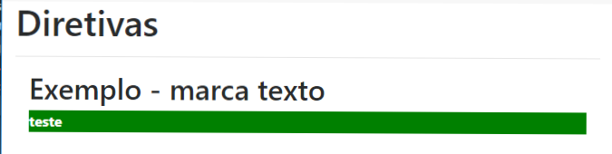

O que fazemo com as Direvivas?
O propósito da diretiva é fornecer meios para que possamos manipular o DOM ou estender as funcionalidades do elemento no qual a diretiva terá ação, como por exemplo alterar o seu conteúdo, estilo, visibilidade etc.., dependendo da necessidade da funcionalidade a ser desenvolvida. Podemos classificar essas diretivas em estruturais:
- NgIf - Tem a mesma funcionalidade de "if" em .JS
- NgFor - Tem a mesma funcionalidade de "for" em .JS
-
NgSwitch - O
ng-switchpermite ocultar elementos / show HTML dependendo de uma expressão. - NgSwitchWhen - Elementos filho com o ng-switch-when directiva será exibido se ele fica um jogo, caso contrário, o elemento, e é as crianças serão removidos.
- NgSwitchDefault - Você também pode definir uma seção padrão, usando a ng-switch-default directiva, para mostrar uma seção se não das outras seções de começar uma partida.
Outras diretivas podem simplesmente alterar a aparência dos itens gerados pelo modelo. Vamos chamar essas diretivas não estruturais:
- NgClass - O ngClass do angular é uma diretiva que permite definir uma classe dinâmicamente a partir do DOM de um elemento.
- NgStyle
- NgControlName
- NgModel
Ao selecionar um elemento HTML, a diretiva pode ampliar seu comportamento de diversas formas, sejam elas para para adicionar um novo HTML, associar eventos à funções Javascript, manipular o DOM.
Que Tal Criarmos uma Diretiva na prática e entendermos o que se passa?!
Um pouco sobre módulos
Para facilitar a organização do projeto é muito importante que ele seja modularizado. O angular permite criarmos módulos customizados de modo bem prático através da CLI.
O comando da cli para criar um módulo é:
ng generate module <nomeDoModulo>
Ou de forma curta:
ng g m <nomeDoModulo>
acabamos por separar a aplicação em módulos, para facilitar a organização do código, incluindo o modulo "directives" ao projeto. Para criar o módulo directives o comando é:
ng generate module directives
Ou de forma curta:
ng g m directives
Agora sim podemos começar. Mãos à obra.
Agora nós vamos criar uma diretiva no nosso prompt de comando com o seguinte comando:
ng generate directive directives/marcaTexto
Após a excecução deste comando, em seu projeto, deve ter criado três aquivos.
vamos agora editar o arquivo marca-texto.directive.ts
import {{ '{' }} Directive, ElementRef, Input, OnInit } from '@angular/core';
@Directive({{ '{' }}
selector: '[appMarcaTexto]'
{{ '}' }})
export class MarcaTextoDirective implements OnInit{{ '{' }}
@Input() corDeFundo: string = 'yellow';
@Input() corDoTexto: string = 'white';
constructor(private _elemento: ElementRef) {{ '{' }}
{{ '}' }})
public ngOnInit() {{ '{' }}
this.mudarFundo();
{{ '}' }})
private mudarFundo(cor: string = 'yellow') {{ '{' }}
this._elemento.nativeElement.style.backgroundColor = this.corDeFundo || cor;
this._elemento.nativeElement.style.color = this.corDoTexto;
this._elemento.nativeElement.style.fontWeight = 'bolder';
{{ '}' }})
{{ '}' }})
Assim como na criação de um componente, a diretiva também possui um decorator especial para que possa ser interpretado pelo angular: @Directive();
Dentro da declaração do decorator incluímos a propriedade "selector", a qual será utilizada como a tag dentro do componente de exemplo que criaremos mais adiante.
@Directive({{ '{' }}
selector: '[appMarcaTexto]'
{{ '{' }})
Uma vez que a diretiva foi criada em um módulo customizado, para que ela fique disponível para os outros módulos devemos além de declará-lo, devemos também exportá-la, para que outros módulos possam ter acesso à diretiva. Para tanto vamos editar o arquivo directives.module.ts
import{{'{'}} NgModule {{'}'}} from'@angular/core';
import{{'{'}} CommonModule {{'}'}} from'@angular/common';
import{{'{'}} MarcaTextoDirective {{'}'}} from'./marca-texto.directive';
@NgModule({{'{'}}
imports: [
CommonModule
],
declarations: [MarcaTextoDirective],
exports: [MarcaTextoDirective]
{{'}'}})
export class DirectivesModule {{'{'}}
{{'}'}}
note que devemos declarar e exportar a diretiva da seguinte forma:
declarations: [MarcaTextoDirective],
exports: [MarcaTextoDirective]
para visualizar a nossa diretiva, vamos criar um componente dentro do módulo "exemplos". O comando para a criação deste componente de exemplo é:
ng g c exemplos/directives
"Para criar o componente dentro de um módulo, devomos escrever o comando incluindo o caminho do módulo no qual o componente pertencerá, o angular/cli irá nos ajudar criando o componente e também irá declará-lo dentro do módulo."
O conteúdo do template "directives.component.html é:
<h1>Diretivas</h1>
<hr>
<div class = "container-fluid">
<h2>Exemplo - marca texto</h2>
<div appMarcaTexto corDeFundo='green'>
teste
</div>
</div>
Adicionamos a rota para componente dentro do arquivo "exemplos/exemplos-routing.module.ts" quer ficará assim:
import{{'{'}} NgModule {{'}'}} from'@angular/core';
import{{'{'}} Routes, RouterModule {{'}'}} from'@angular/router';
import{{'{'}} DirectivesComponent {{'}'}} from'./directives/directives.component';
const routes: Routes = [
{{'{'}}
path: 'exemplos', children: [
{{'{'}} path: '', component: ComponentsComponent {{'}'}},
{{'{'}} path: 'componentes', component: ComponentsComponent {{'}'}},
{{'{'}} path: 'diretivas', component: DirectivesComponent {{'}'}}
]
{{'}'}}
];
@NgModule({{'{'}}
imports: [
RouterModule.forChild(routes)],
exports: [RouterModule]
{{'}'}})
export class ExemplosRoutingModule {{'{'}}
{{'}'}}
Agora podemos rodas nossa aplicação:
ng serve
e navegar para a rota "http://localhost:4200/exemplos/diretivas"
Em seu navegador deve aparecer algo parecido com o print acima.